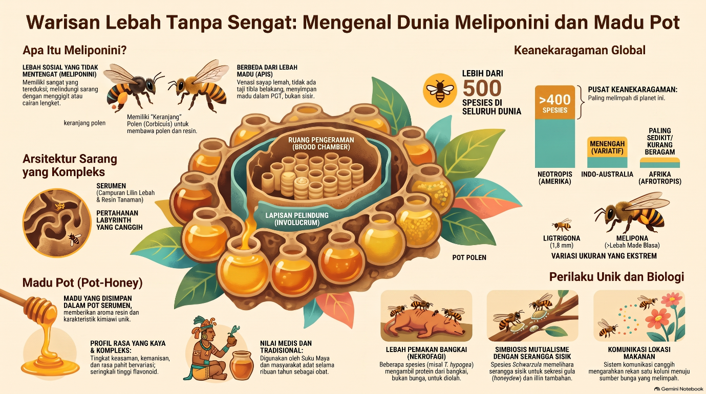

Lebah Meliponini (lebah tanpa sengat atau stingless bees) adalah kelompok lebah sosial yang mendominasi kawasan tropis dan subtropis di berbagai penjuru dunia. Suku lebah ini memiliki keanekaragaman yang luar biasa, mencakup lebih dari 500 spesies yang telah teridentifikasi. Jumlah ini diperkirakan 50 kali lipat lebih kaya spesies dibandingkan dengan lebah madu penyengat biasa dari genus Apis.

Meskipun bertubuh kecil, lebah Meliponini menyimpan berbagai keunikan biologis dan menghasilkan madu pot (pot-honey) yang sangat dihargai tinggi karena khasiat terapeutiknya yang luar biasa.
1. Karakteristik Fisik dan Keberagaman Ukuran
Lebah Meliponini memiliki rentang ukuran tubuh yang sangat bervariasi tergantung spesiesnya. Beberapa spesies dari genus Melipona (seperti Melipona fuliginosa) dapat tumbuh kokoh hingga mencapai panjang 11–13 mm. Sebaliknya, sebagian besar spesies lebah tanpa sengat berukuran jauh lebih kecil. Spesies terkecil seperti lebah Liotrigona dari Madagaskar hanya berukuran sekitar 1,8 mm, sementara lebah Leurotrigona pusilla dari wilayah Amazon memiliki panjang tubuh sekitar 2 mm.
2. Ketiadaan Sengat dan Sistem Pertahanan Unik
Sesuai namanya, lebah betina dari suku Meliponini tidak memiliki sengat yang berfungsi karena alat sengat mereka telah tereduksi dan mengalami modifikasi melalui proses evolusi. Meskipun tidak bisa menyengat, lebah ini memiliki mekanisme pertahanan sarang yang sangat agresif dan tak kalah tangguh.
Ketika sarang mereka diganggu, lebah pekerja akan menyerang secara massal dengan cara menggigit kulit, menyusup ke dalam rambut, janggut, telinga, lubang hidung, hingga mengerubungi area sensitif di sekitar mata pengganggu. Dalam proses pertahanan ini, mereka juga menyebarkan feromon alarm yang sangat efektif untuk memobilisasi ribuan rekan koloni lainnya agar ikut serta melakukan serangan bersama.
3. Arsitektur Sarang dan Wadah Serumen
Lebah Meliponini hidup dalam sistem koloni permanen yang teratur, terdiri dari puluhan hingga ratusan ribu lebah pekerja dan biasanya dipimpin oleh satu ratu. Mereka bersarang di tempat-tempat terlindung seperti rongga pohon hidup, celah batuan, tanah, hingga rongga di dinding bangunan.
Untuk membangun sarangnya, lebah tanpa sengat menyekresi lilin dari kelenjar di bagian abdomen mereka, lalu mencampurnya dengan resin atau propolis yang mereka kumpulkan dari permukaan vegetasi tanaman. Campuran khusus yang bersifat lentur dan kaya akan antimikroba ini disebut sebagai serumen (cerumen).
Berbeda dengan lebah madu biasa (Apis mellifera) yang menyimpan madu pada sisir lilin vertikal, lebah Meliponini membangun pot penyimpanan bulat berbahan serumen (cerumen pots) khusus di luar area ruang biak untuk menaruh madu dan serbuk sari secara terpisah.
4. Madu Pot: Sang Madu "Ajaib" yang Berbeda
Secara evolusioner, lebah tanpa sengat diyakini sebagai penemu madu yang sebenarnya di bumi; garis keturunan mereka telah memproses nektar sejak era kapur akhir (Late Cretaceous), sekitar 100 juta tahun lalu sebelum lebah penyengat biasa memproduksi madu sisir. Madu pot yang dihasilkan memiliki karakteristik unik yang membedakannya secara signifikan dari madu lebah biasa:
- Sifat Fisikokimia Khas: Madu pot secara alami memiliki kadar air yang sangat tinggi (berkisar antara 20% hingga lebih dari 35%) sehingga konsistensinya jauh lebih encer dan cair dibandingkan madu biasa.
- Rasa Asam-Manis (Sour-Sweet) yang Menyegarkan: Madu pot didominasi oleh sensasi rasa manis-asam yang kuat serta aroma khas herba hutan. Rasa asam yang unik ini dihasilkan oleh tingkat keasaman bebas (free acidity) alami yang sangat tinggi.
- Aktivitas Enzim Diastase yang Sangat Rendah: Diastase alami pada madu lebah tanpa sengat sangat rendah. Oleh sebab itu, parameter keaktifan enzim diastase tidak dapat dijadikan standar mutu atau indikator pemanasan madu seperti pada madu lebah biasa.
- Fermentasi Alami yang Menyehatkan: Kadar air yang tinggi memungkinkan mikroorganisme menguntungkan (seperti bakteri asam laktat Lactobacillus dan ragi alami) untuk tetap aktif beraktivitas di dalam pot tertutup. Proses fermentasi alami ini memicu munculnya busa halus serta gelembung gas pada permukaan madu, yang seiring waktu terbukti meningkatkan kapasitas antioksidan madu tersebut.
5. Khasiat Pengobatan Tradisional dan Apiterapi
Sejak zaman kuno, madu lebah tanpa sengat telah dihargai sebagai makanan suci dan obat mulia, terutama oleh peradaban Maya di Mesoamerika yang mendewakan spesies Melipona beecheii dengan sebutan xunan kab (wanita agung). Di berbagai belahan dunia, madu pot memiliki reputasi medis yang luar biasa:
- Terapi Penyakit Mata: Secara tradisional dan klinis, madu lebah tanpa sengat (seperti spesies Tetragonisca angustula) digunakan secara luas sebagai tetes mata alami untuk mengobati penyakit katarak dan konjungtivitis.
- Penyembuh Luka dan Anti-inflamasi: Kandungan propolis dan hidrogen peroksida alami di dalam madu pot bekerja sangat baik sebagai pembalut luka terbuka dan luka bakar guna mencegah infeksi bakteri patogen.
- Kandungan Flavonoid dan Pencegahan Kanker: Madu pot terbukti jauh lebih kaya akan senyawa flavonoid glikosida dibandingkan madu lebah penyengat biasa. Berbagai pengujian laboratorium menunjukkan bahwa madu lebah tanpa sengat memiliki efek sitotoksik (antiproliferatif) yang kuat dalam menghambat pertumbuhan sel-sel kanker, seperti sel kanker ovarium.
Mau coba madu klanceng asli? Chat kami langsung di WhatsApp atau lihat pilihan kemasan di sini.